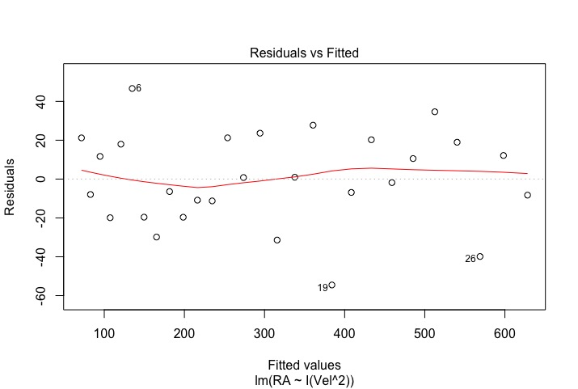
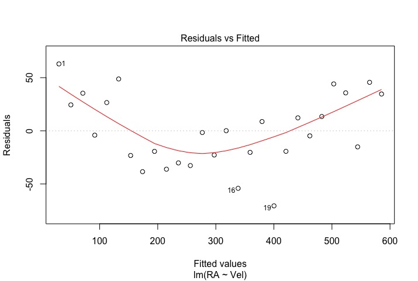
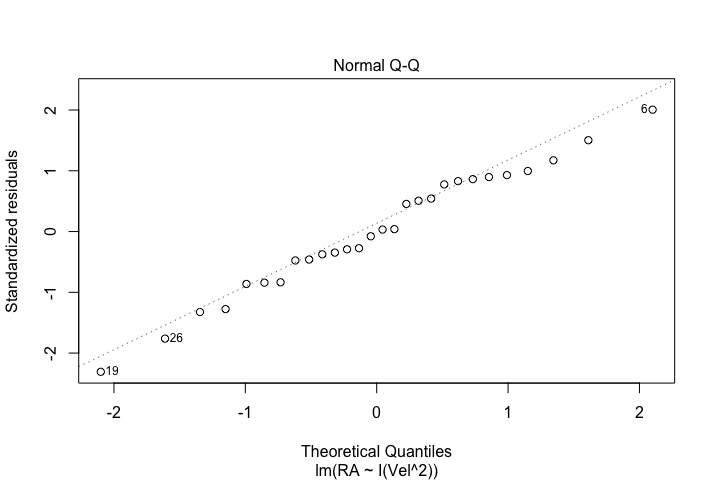
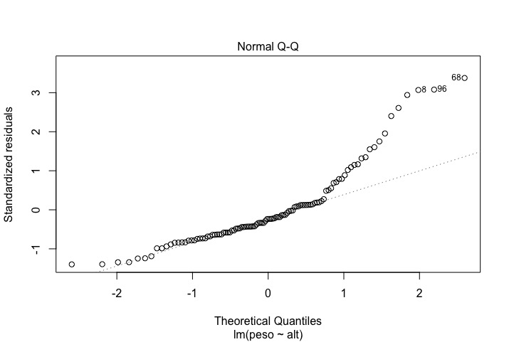
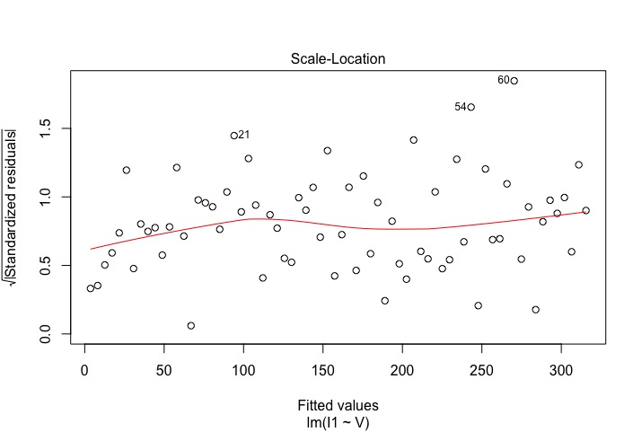
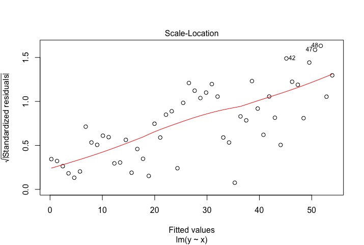
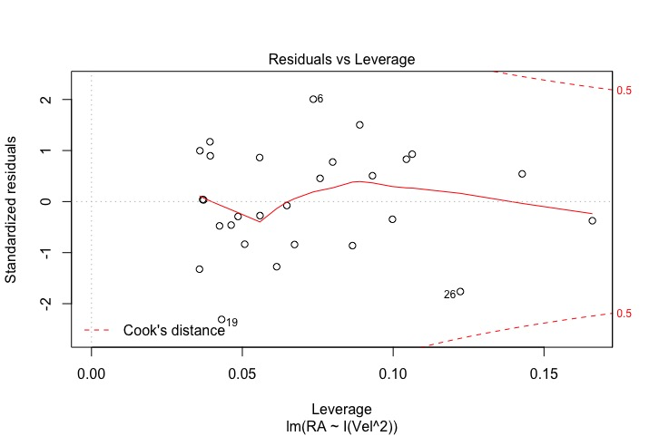
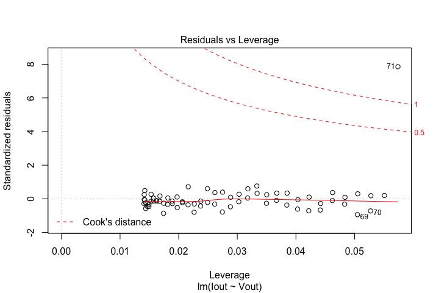

Capítulo 14 Regresión Lineal
Hemos visto cómo estudiar datos cuando tenemos una variable numérica (t.test), una cualitativa (prop.test y \(\chi^{2}\) de bondad de ajuste), una variable numérica y una cualitativa (ANOVA) y dos varialbes cualitativas (\(\chi^{2}\) de homogeneidad/independencia). Nos queda el caso de tener dos variables numéricas. La prueba estadístca habitual en este caso es la regresión lineal con el que encontramos la recta o curva que “mejor” se aproxima a nuestros datos. Es una prueba complicada, que vamos a dividir en varias partes: el cálculo de la recta o curva, las estadísticas involucradas, el diagnóstico de la fiabilidad de la prueba y la predicción de valores nuevos. Empezamos con el cálculo de la recta o curva, que en el fondo no es una cuestión de estadística, sino de cálculo.
14.1 Cálculo
14.1.1 Fundamentos
Queremos saber como varía la intensidad que pasa por un componente en función del voltaje que le aplicamos. Vamos a imaginarnos que somos unos científicos de principios del S. XIX estudiando esta cosa nueva llamada electricidad y no conocemos la Ley de Ohm. Montamos un circuito con una fuente de alimentación para aplicar un voltaje y un amperímetro para medir la intensidad. Lo hacemos con todo cuidado, hacemos varias pruebas, mejoramos nuestros procedimientos (vemos, por ejemplo, que el lugar donde colocamos las sondas de medida influyen en el valor que obtenemos) y tomamos nuestras medidas. Son las siguientes:
| V (voltios) | I (mA) |
|---|---|
| 3,0 | 20 |
| 5,0 | 34 |
| 7,0 | 57 |
| 9,0 | 82 1 |
| 11,0 | 11 |
| 14,0 | 141 |
| 17,0 | 165 |
| 20,0 | 180 |
| 25,0 | 235 |
| 30,0 | 275 |
V = c(3.0, 5.0, 7.0, 9.0, 11.0, 14.0, 17.0, 20.0, 25.0, 30.0)
I = c(20, 34, 57, 82, 111, 141, 165, 180, 235, 275)
plot(V, I)
Estos son los datos. A la variable que está en el eje X se le llama variable independiente o estímulo. A la variable que está en el eje Y se le llama variable dependiente o respuesta. Nosotros introducimos la variable independiente, puede tomar cualquier valor que queramos, pero medimos la dependiente, que toma el valor que corresponda. Otra forma de verlo es que estimulamos con el voltaje y el componente responde con una cierta intensidad.
Vemos que los puntos siguen una extraña curva que no identificamos. Además, durante las pruebas nos fijamos que siempre obteníamos alguna extraña curva, pero que no siempre se parecía a esta. Notamos también que en este caso (y en todos los anteriores) los puntos no formaban exactamente una recta, pero siempre se acercaban bastante. Esto nos lleva a hacer una suposición: vamos a suponer que los puntos deberían seguir realmente una recta y que si no la siguen son por errores experimentales: aunque el primer punto es, dentro de nuestra precisión, (3,0; 20), realmente podría ser el (2,96; 20,4), un poco desviado de donde lo he pintado. O quizá en algún caso no he colocado la sonda con todo el cuidado que debía. Es razonable pensar que los puntos reales están cerca, pero no exactamente donde la teoría predice. Supongamos entonces que en el caso ideal, si no hubiera errores experimentales, los puntos siguieran perfectamente una recta. ¿Qué recta sería?
Estamos suponiendo que la ley que regula la intensidad en función del voltaje es realmente \(I = a + bV\) y que nuestros puntos se desvían de esta recta por error experimental. Es decir que para cada par \((V_{i}, I_{i})\) se cumple que \[I_{i} = a + bV_{i} + \varepsilon_{i}\] donde \(\varepsilon_{i}\) es nuestro error experimental para la medida \(i\). A estas cantidades las vamos a llamar residuos. Nótese que si el punto está por encima de la recta el residuo es positivo y si está por debajo, el residuo es negativo. Vamos a dibujar los residuos tenemos la siguiente gráfica:

Los residuos no corresponden a la distancia del punto a la recta, sino que es el desplazamiento vertical desde el punto a la recta.
Para poder calcular la recta vamos a suponer además que como hemos ido con mucho cuidado en reducir en lo posible los errores experimentales, la recta “real” va a ser aquella que minimiza de forma conjunta los residuos. Siguiendo la misma idea que en la prueba de \(\chi^{2}\), esto va a querer decir que queremos minimizar la suma de los cuadrados de los residuos.
Con estas dos suposiciones —el voltaje y la intensidad están relacionados mediante una recta y que la recta es aquella que minimiza la suma de cuadrados de los residuos— hemos convertido nuestro problema en uno de minimización, un problema de cálculo. Ya saben: derivar, igualar a 0, etc. No es trivial resolver este problema de cálculo, pero tampoco es demasiado difícil. No lo vamos a detallar aquí: en Wikipedia o cualquier libro elemental de estadística lo puede encontrar. Simplemente saber que se acaba con dos fórmulas en las que introducimos nuestros puntos y nos permiten calcular los valores de \(a\) y \(b\).
A este método se le llama regresión lineal. Algunas matizaciones.
El adjetivo lineal no hace referencia a que hemos calculado una recta, sino al método de cálculo usado. Podemos usar la regresión lineal para calcular cualquier curva que propongamos. Veremos ejemplos más adelante. Es más, este método lo creó el matemático alemán C.F. Gauss no para calcular una recta, sino para calcular una elipse, la de la órbita de Ceres.
Aunque este método de regresión se considera estadística, el cálculo de la recta (o curva) en sí no es estadística sino cálculo. El hacer inferencias sobre la recta (o curva) obtenida sí que es estadística y requiere que se cumplan una serie de condiciones que detallaremos en su momento.
El que obtengamos una recta, una exponencial o cualquier otra curva no es inherente ni al método ni a los puntos en sí, sino que es una hipótesis del investigador. En otras palabras, el que sea una recta (o exponencial o lo que sea) no “sale” del método sino que lo “mete” el que hace los cálculos.
Se suele decir que se calcula la recta que minimiza la suma de las distancias de los puntos a la recta. Aunque informalmente ya nos basta, no es correcto. Como hemos visto, lo que minimiza es la suma de los cuadrados de los residuos. No es lo mismo.
Usaremos R para hacer los cálculos. La función a utilizar es
lm(). En el caso que queramos calcular una recta, la
instrucción tiene la forma lm(y~x), que se lee “\(y\) en
función de \(x\)”. Recordemos que \(y\) es la variable dependiente, la
respuesta, y que \(x\) es la variable independiente, el estímulo. Para
nuestro ejemplo:
##
## Call:
## lm(formula = I ~ V)
##
## Coefficients:
## (Intercept) V
## -4.877 9.566La ordenada en el origen (lo que aparece en la salida de R como Intercept) es \(-4,880\) mA y el coeficiente que multiplica al voltaje (la pendiente) es \(9,559\). Es decir la recta de regresión es \[I = -4,880 + 9,559\,V.\] Lo que estos dos coeficientes representan es que, según este modelo, con un voltaje de 0 V pasa por el componente una intensidad de \(-4,880\) mA y que por cada voltio adicional que apliquemos, la intensidad sube \(9,559\) mA.
Sabemos que la ordenada en el origen debería ser 0. Cuando estudiemos la parte estadística de la regresión lineal veremos si este \(-4,880\) que hemos obtenido significa que tenemos un error experimental o no. Podemos aplicar la ley de Ohm para obtener de nuestras medidas la resistencia del componente: \(1000/9,559 = 104,6\,\Omega\) (el 1000 es porque tenemos las intensidades en mA).
14.1.2 Otro ejemplo
En nuestro primer ejemplo teníamos una ley física, y las leyes físicas siempre siguen una expresión matemática, a menudo simple. Si además trabajamos en el entorno controlado de un laboratorio, tenemos una variabilidad muy pequeña, como obtuvimos. Vamos a un segundo ejemplo donde no hay ninguna ley física y la variabilidad es mucho mayor.
Estamos diseñando una montaña rusa para un parque de atracciones. Es una montaña rusa pequeña en la que sólo se montarán niños de hasta 12 años. Para mejorar la eficiencia queremos estimar el peso de los niños que suben a la atracción. Desgraciadamente no es factible hacer que los niños se pesen a la entrada, ni es posible, por cuestión de coste, añadir una báscula y pesar los vagones con los niños montados. Una solución simple sería contar cuántos niños se montan y multiplicar ese número por el peso medio de un niño, pero buscamos algo mejor.
Una posibilidad que queremos estudiar es poner una cámara en el paso de entrada y usarla para medir con bastante precisión la altura de los niños. Como el peso está correlacionada con la altura, esto teóricamente nos permitiría estimar el peso de los niños que se monten en la atracción. En este caso la variable independiente es la altura, lo que medimos e introducimos en el modelo, y la variable dependiente es el peso, lo que estimamos.
No hay aquí ninguna ley física, pero si una noción de que cuanto mayor es la altura de un niño, mayor va a ser su peso. Es cierto que el peso no sólo depende de la altura, sino que también depende del sexo del niño, de sus constitución, de lo gordo o delgado que está, etc., pero si el peso depende de la altura en gran medida, este método puede funcionar.
Para estudiar nuestras ideas cogemos el conjunto de datos kid.weights
del paquete UsingR. Seleccionamos a los mayores de 4 años (48 meses).
Creamos las variables alt, con la altura de los niños y
peso, con su peso. Lo dibujamos y miramos los datos:
library("UsingR")
#Mayores de 4 años
KW4 = kid.weights[kid.weights$age >=48,]
peso = KW4$weight*0.454
alt = KW4$height*2.54
plot(alt, peso, xlab = "altura (cm)", ylab = "peso (Kg)")
Parecen bastante dispersos. No está claro qué curva sería la que más se aproxima a los puntos. Ni siquiera sabemos si la tal curva existe. Vamos a empezar por suponer que es una recta (para qué complicarse la vida de entrada). La calculamos:
##
## Call:
## lm(formula = peso ~ alt)
##
## Coefficients:
## (Intercept) alt
## -14.8472 0.3543Estos dos coeficientes se interpretan de la siguiente manera: el peso de un niño de altura 0 cm es de \(-14,8\) Kg y por cada centímetro adicional, el niño pesa \(0,35\) Kg más. El primer coeficiente es obviamente absurdo. Esto pasa mucho en la regresión lineal y es debido a que los datos de nuestra muestra están entre 60 cm y 160 cm y, a menos que haya una ley natural conocida, sólo debemos utilizar la recta dentro de este rango: no tienen validez fuera de él (y hemos de tener más dudas en los extremos que en el centro). Esta recta, este modelo, no puede extrapolarse fuera del rango de los datos de partida.
Gráficamente queda:

Vemos que hay muchos puntos alejados de la recta. Quizá la regresión no sea la solución que buscábamos. Cuando estudiemos la parte de estadística de la regresión podremos precisar más la bondad de esta recta como predictora de pesos.
14.1.3 ¿Y si no es una recta?
Como hemos dicho, la regresión lineal no necesariamente se debe aplicar a una recta. Es el caso más simple y más habitual, pero podemos partir de cualquier curva que queramos. Veamos primero un caso típico, el crecimiento exponencial. En este caso transformamos la función para que se convierta en una recta. Después veremos cómo indicar a R otras funciones que queramos utilizar.
Crecimiento exponencial
Muchos sistemas crecen de forma exponencial durante algunos periodos. Por ejemplo, muchos crecimientos orgánicos (animales, plantas, bacterias) crecen exponencialmente si no hay limitaciones de recursos: cuantos más individuos hay, más nacimientos se producen, lo que hace que haya aún más individuos, lo que hace que haya aún más nacimientos. Esto sigue así hasta que la escasez de recursos hace que no puedan crecer tan rápido, llegando eventualmente a pararse. Pero inicialmente el crecimiento es exponencial. Por un razonamiento análogo, los decrecimientos orgánicos también presentan a menudo una fase exponencial.
Se suele utilizar (equivocadamente) el término “crecimiento exponencial” cuando lo que se quiere decir es que hay un crecimiento rápido. Técnicamente, tenemos un crecimiento exponencial si el porcentaje del crecimiento es constante y esto tiene una forma matemática concreta. Sea \(t\) el tiempo medido a partir de un cierto instante inicial e \(y\) el número de individuos. Entonces tenemos crecimiento exponencial si \(y = a e^{bt}\). Comprobemos que esto significa que el crecimiento porcentual por unidad de tiempo es constante. El crecimiento porcentual es el crecimiento en una unidad de tiempo dividido por el tamaño de la población: \[\frac{ae^{b(t+1)} - ae^{bt}}{ae^{bt}}\] Desarrollamos \[\frac{ae^{b(t+1)} - ae^{bt}}{ae^{bt}} = \frac{a(e^{bt}e^{b}) - ae^{bt}}{ae^{bt}} = \frac{ae^{bt}(e^{b} - 1)}{ae^{bt}} = e^{b} - 1\]
Si \(b>0\) entonces \(e^{b} - 1 > 0\) y tenemos un crecimiento, mientras que si \(b < 0\), \(e^{b} - 1 < 0\) y tenemos un decrecimiento. Por ejemplo, si \(b = 0,4\) el crecimiento es de \(e^{0,4} - 1 = 0,49\), un 49%, mientras que si \(b = -0,2\) tenemos un crecimiento de \(e^{-0,2} - 1 = -0,18\), es decir un decrecimiento del 18% por unidad de tiempo.
Podemos transformar la fórmula del crecimiento exponencial a una fórmula lineal. Si aplicamos logaritmos a ambos lados de la ecuación tenemos: \[\log y = \log(a e^{bt}) = \log a + \log e^{bt} = \log a + bt\] Luego si \(y\) crece exponencialmente, el logaritmo de \(y\) crece linealmente.
En el fichero Telefonos.csv (pestaña de recursos) tenemos el número de teléfonos por cada 100 habitante en varios países. Cojamos el caso de Nicaragua. Si dibujamos el número de teléfonos por cada 100 habitantes en Nicaragua en función del año, tenemos la siguiente gráfica:
Tel = read.csv("datos/Telefono.csv", header = T, sep = ";", dec = ",")
Nicaragua = Tel$Nicaragua
plot(Tel$Year, Nicaragua, xlab = "Año", ylab = "Teléfonos/100 hab")
Vemos que podría ser un crecimiento exponencial. Para comprobarlo vamos a dibujar el logaritmo del numero de teléfonos en función del año:

Vemos que a partir de 1991 hasta el 2006 tenemos algo que se parece a
una recta, es decir, un crecimiento aproximadamente exponencial. Lo
malo de esta gráfica es que es difícil deducir el número de teléfonos
de lo que vemos en la gráfica: por ejemplo el “2” en el eje Y
quiere decir \(e^{2} = 7,4\) teléfonos por 100 habitantes. Por suerte R
nos permite dibujar el logaritmo, pero ajustando la escala al número
de teléfonos. Para ello hay que añadir el parámetro log = "y"+ a la
función plot:
 Este tipo de gráficas se llaman semilogarítmicas, pues un eje
tiene escala lineal y el otro, logarítmico.
Este tipo de gráficas se llaman semilogarítmicas, pues un eje
tiene escala lineal y el otro, logarítmico.
Vamos a estudiar el crecimiento exponencial de los teléfonos en
Nicaragua desde 1991 a 2006. En la variable TNic tenemos los
teléfonos/100 Habitantes de Nicaragua desde 1991 a 2006. Creamos una
variable Tiempo que es años transcurrido desde 1991 (1991 es
el año 0). Y ahora hallamos la recta con la instrucción
lm(log(TNic)~Tiempo). Esto nos da un valor para la ordenada
en el origen de \(-0,14\) y para la pendiente de \(0,2218\). Luego la
exponencial que minimiza la suma de residuos y que nos sirve de
modelo para el crecimiento de teléfonos en Nicaragua es
\[\mbox{TNic} = 0,866\, e^{0,2218 t}\]
donde \(t\) es el tiempo, medido en años, transcurridos desde el 1 de
enero de 1991. Les dejo como ejercicio que averigüen de dónde sale el
\(0,886\). La gráfica, con la curva de regresión añadida es la siguiente:
TNic = Tel[Tel$Year > 1990,]$Nicaragua
Tiempo = Tel[Tel$Year > 1990,]$Year - 1991
Crec = lm(log(TNic)~Tiempo)
plot(Tel$Year, Nicaragua, log = "y", xlab = "Año", ylab = "Teléfonos/100 hab")
curve(exp(Crec[[1]][1])*exp(Crec[[1]][2]*(x-1991)), from = 1991, to = 2006, add = T, col = "red") 
Como hemos explicado, el crecimiento porcentual viene dado por \(e^{b}-1\). Hacemos el cálculo: \(e^{0,2218}-1 = 0,25\). El crecimiento anual medio de teléfonos en este periodos fue del 25%.
Otras funciones
La fuerza de resistencia aeorodinámica \(F_{RA}\) de un coche en movimiento
depende de su superficie frontal \(S\), la densidad del aire \(\rho\), el
coeficiente aerodinámico \(C_{x}\) y la velocidad \(V\) a la que se mueve
y viene dada por la expresión
\[F_{RA} = \frac{1}{2}\, \rho S C_{x} V^{2}.\]
Para calcular el coeficiente aerodinámico se mete el coche en un túnel de viento y se mide la fuerza que ejerce que el aire sobre él para diferentes velocidades del viento. La variable independiente sería la velocidad y la dependiente sería la fuerza de resistencia aerodinámica.
Lo hemos hecho con un coche de superficie frontal \(S = 1,97 \mbox{m}^{2}\). La densidad del aire es de \(\rho = 1,225 \mbox{Kg}/\mbox{m}^{3}\). El resultado de una prueba es:
| \(V\) (m/s) | \(F_{RA}\) (Nw) |
|---|---|
| 15 | 101 |
| 18 | 133 |
| 22 | 145 |
| 26 | 238 |
| 31 | 331 |
| 36 | 442 |
| 42 | 640 |
Vel = c(15, 18, 22, 26, 31, 36, 42)
RA = c(101, 133, 145, 238, 331, 442, 640)
plot(Vel, RA, xlab = "Velocidad (m/s)", ylab = "Res. Aero. (Nw)")
Para calcular el coeficiente queremos hallar la curva de regresión que mejor se ajusta a los datos medidos, es decir, la que minimiza la suma de los cuadrados de. Sabemos, por las leyes físicas de la aerodinámica, que la curva es de la forma \(F_{RA} = a + bV^{2}\). Hacemos el cálculo con R.
##
## Call:
## lm(formula = RA ~ I(Vel^2))
##
## Coefficients:
## (Intercept) I(Vel^2)
## 3.4432 0.3501Hemos introducido el tipo de curva en la función lm(), indicando que debe ajustarse al cuadrado de la velocidad. Hemos de escribir I(V^(2)) y no simplemente V^2 ya que dentro de lm() los símbolos de multiplicación (*), división (/), exponenciación (^) y otros tienen un significado propio. La
función I() le indica a lm() que utilice estos símbolos como operaciones aritméticas.
En la respuesta de R vemos que la ordenda en el origen es \(3,44\) y el coeficiente del término \(V^{2}\) es \(0,3502\). Sabemos que la ordenada en el origen debería ser 0. El resultado de la regresión es un valor pequeño, lo cual es bueno, pero ya veremos si indica algún problema experimental cuando estudiemos la estadística de la regresión.
Ahora podemos calcular el coeficiente aerodinámico: Tenemos que \(\frac{1}{2}\, \rho S C_{x} = 0,3502\) y de aquí \(C_{x} = (2 \cdot 0,3502)/(S \rho) = 0,29\).
Para un ejemplo final, volvamos al problema de los niños y la montaña rusa. Hemos visto que una recta no describe bien los puntos de nuestra muestra. Podemos probar con alguna otra función. Mirando los datos sin la recta, vemos que para valores de altura por encima de 140 cm hay muchos individuos de peso alto. Esto nos induce a pensar que el peso crece más que linealmente con la altura. Vamos a añadir un término cuadrático al término lineal que teníamos a ver qué pasa. Es decir, queremos una función del tipo \[\mbox{Peso} = a + b\cdot \mbox{altura} + c\cdot\mbox{altura}^{2}.\]
Indicamos a R la función que queremos y miramos los resultados:
##
## Call:
## lm(formula = peso ~ alt + I(alt^2))
##
## Coefficients:
## (Intercept) alt I(alt^2)
## 67.602259 -1.105931 0.006235La función de esta forma que minimiza la suma de los residuos al cuadrado es:
\[\mbox{Peso} = 67,6 -1,11\cdot \mbox{altura} + 0,0062\cdot\mbox{altura}^{2}.\]
Si la dibujamos queda:
plot(alt, peso, xlab = "altura (cm)", ylab = "peso (Kg)")
curve(PAQ[[1]][1] + PAQ[[1]][2]*x + PAQ[[1]][3]*x^2, add = TRUE, col = "blue")
Tiene mejor pinta que el caso de la recta, aunque es obvio que esta curva no tiene ningún sentido anatómico: predice que entre los 60 cm y 85 cm de altura el peso disminuye con la altura. Esto no quiere decir que no nos sea útil. Lo sabremos con más precisión cuando estudiemos la parte estadística de la regresión lineal.
14.1.4 Resumen de la parte de cálculo
Cuando tenemos dos variables numéricas y en el que vemos una correlación, nos puede interesar encontrar la recta o curva que minimice la suma de los cuadrados de los residuos, es decir, que mejor se aproxima de forma global nuestros datos. El determinar qué recta o curva utilizar no es cuestión de estadística, sino que lo determina el que realiza el estudio basándose en cuestiones teóricas, en su experiencia y lo que ve o simplemente en prueba y error.
Una vez decidido qué curva usar, hallar la “mejor” es un problema de minimización, de cálculo. El fundamento en el que se basa es que los valores de la variable dependiente que vemos provienen de la curva pero están “perturbados” por error experimental u otros efectos. Esta perturbación es la que hace que no veamos la recta o curva directamente. Buscamos la curva que hace que las perturbaciones sean mínimas, pues suponemos que la ley física, biológica, ingenieril o lo que sea es la que manda. En algunos casos esto es claramente cierto, pero en otras es una mera suposición y puede que la “ley” de partida no exista, y la curva que buscamos, tampoco. Eso no impide que encontremos una curva, pero no es “real” sino sólo un producto de nuestra imaginación.
Hemos visto varios casos: el caso de una recta, el del crecimiento exponencial, que puede transformarse en una recta, o el de una función general. Salvo en el caso de la recta, los cálculos pueden ser muy complejos, pero por suerte tenemos ordenadores, y R, para hacerlos.
Ahora bien, la curva obtenida proviene de una muestra. Diferentes muestras de la misma población darán lugar a diferentes curvas. El saber qué podemos decir de la curva “real” a partir de la curva obtenida de nuestra muestra es donde entra la estadística. Y lo que veremos en el siguiente apartado.
14.2 Estadística
Vimos en el documento anterior cómo a partir de dos variables numéricas y un tipo de curva propuesta por el investigador, es posible encontrar la que minimiza la suma de los cuadrados de los residuos. Este es un problema puramente de cálculo: minimizar una cierta función. Ahora bien, como la curva calculada depende de la muestra, si cojo muestras diferentes de una misma población estaré obteniendo curvas diferentes. ¿Qué se puede decir de la curva de toda la población a partir de la curva que he obtenido de una muestra concreta? Ese sí es un problema de estadística y es el que trataremos en este documento.
Para no ir escribiendo “recta o curva” cada vez, uso el término genérico curva cuando no tiene una forma definida. En particular puede ser una recta. Reservo los términos “recta”, “exponencial”, “cuadrática” etc, para referirme a tipos de curva (o recta) concretas. ***
14.2.1 Incertidumbre en la regresión lineal
Lo bueno de simular en un ordenador, no sólo es que puedo conseguir todas las muestras que quiera con suma facilidad, sino que además sé cuál es el valor poblacional del que parto. Retomemos el problema de la ley de Ohm presentado en el documento anterior.
Para crear los datos usado en el ejemplo escogí unos valores de la variable independiente, el voltaje, supuse una resistencia de 110 \(\Omega\) y calculé los valores “exactos” de la variable dependiente, la intensidad. Después le añadí el “error experimental”, es decir los residuos, mediante unos valores aleatorios que siguen una distribución normal de media 0 y desviación típica adecuadamente baja. Si la dibujamos queda:
V = c(3, 5, 7, 9, 11, 14, 17, 20, 25, 30)
Ie = (1000/110)*V # en mA
I = Ie+rnorm(length(V), 0, 1500/110)Cada vez que ejecute la última instrucción obtendré una nueva muestra de la intensidad, pero siempre de la misma población. Si cojo 4 muestras y calculo sus rectas de regresión, obtengo el gráfico siguiente (sin los puntos):
plot(V,Ie, xlab ="V (voltios)", ylab = "I (mA)", type = "n")
for (i in 1:4)
{ I = Ie+rnorm(length(V), 0, 1500/110)
abline(lm(I~V), col = "red")
}
abline(0, 100/11, col = "blue")
Las rectas rojas son las obtenidas de la regresión, la recta azul es la que sigue la Ley de Ohm. Vemos que todas las regresiones se acercan a la poblacional, con algunas por encima, otras por debajo, unas con una pendiente mayor, otras menor. Esta variación depende del muestreo.
Si quiero hacerme una idea de hasta dónde puede llegar la variablidad en función de la muestra, calculo y pinto muchas rectas, por ejemplo 1000:

Vemos que la pendiente presenta cierta incertidumbre y también la ordenada en el origen. No vamos a mostrar cómo establecemos esta incertidumbre, ni siquiera de forma esquemática. Lo que haremos es establecer las condiciones que se han de dar para que podamos calcularla y leeremos de la salida de R los datos que nos interesan.
14.2.2 Condiciones
Para calcular la curva de regresión no había condición alguna: dados unos puntos en el plano, es decir dos variables numéricas de la misma longitud, y una curva de una forma determinada, siempre se podía calcular la curva que minimizara la suma de los residuos. Pero para poder calcular las características estadísticas sí que necesitamos que se cumplan algunas condiciones.
Los residuos son independientes. Esto quiere decir, por ejemplo, que si estamos midiendo la distancia recorrida por un objeto, esta distancia siempre hay que medirla desde el origen, pues si midiera lo que ha avanzado desde la última medida, un error en una medida se propaga a todas las siguientes y los residuos no serían independientes.
Los residuos siguen una distribución normal de media 0 y desviación típica \(\sigma\). Esto es bastante razonable al tomar medidas de algo, pero no tanto si miramos la correlación entre la altura y peso de niños. Si la media no es 0 es que tenemos un error sistemático o un sesgo: estamos añadiendo (o quitando) de forma sistemática una cantidad al valor de la variable.
La desviación típica de los residuos es constante. Este es un problema frecuente. Por ejemplo, al tomar medidas, los primeros errores pueden ser mayores ya que hems de acostumbrarnos al aparato y el procedimiento; después disminuye, al aumentar nuestra aptitud; y al final vuelve a crecer por cansancio, aburrimiento u otros motivos.
Cuanto menos se cumplan estas condiciones, menos fiables serán los valores estadísticos calculados. En el apartado de diagnóstico veremos cómo determinar lo bien o mal que se han cumplido estas condiciones.
Nótese que no hemos puesto condición alguna sobre las variables, sino sólo sobre los residuos. Las variables pueden seguir cualquier distribución, ser unimodales o multimodales, simétricas o asimétricas. No importa. Lo único a lo que hay que ir atento es a los valores atípicos: un único valor atípico puede hacer cambiar mucho el resultado. Esto lo vemos en la siguiente gráfica. Los puntos negros dan lugar a la recta de regresión negra. Pero si añadimos un único valor atípico, el punto rojo, las características de la recta cambian enormemente.

14.2.3 Salida de R
En el apartado de cálculo hicimos la regresión lineal R = lm(I ~ V)} y vimos uqe escribiendo R obteníamos los coeficientes de la
regresión y nada más. Para obtener mucha más información, usamos
summary():
##
## Call:
## lm(formula = I ~ V)
##
## Residuals:
## Min 1Q Median 3Q Max
## -8.952 -6.099 -1.543 5.641 11.957
##
## Coefficients:
## Estimate Std. Error t value Pr(>|t|)
## (Intercept) -4.877 4.991 -0.977 0.357
## V 9.566 0.304 31.465 1.13e-09 ***
## ---
## Signif. codes: 0 '***' 0.001 '**' 0.01 '*' 0.05 '.' 0.1 ' ' 1
##
## Residual standard error: 8.083 on 8 degrees of freedom
## Multiple R-squared: 0.992, Adjusted R-squared: 0.991
## F-statistic: 990 on 1 and 8 DF, p-value: 1.132e-09Es mucha información, alguna que nos interesa y otra que aún no. Nos
fijaremos en estos momentos en lo que está bajo el epígrafe de Coefficients.
En la primera columna (Estimate) tenemos los valores, los mismos que habíamos obtenido tecleando R. Con summary() obtenemos 3
columnas más: el error estándar, un estadístico \(t\) y la probabilidad
de que sea mayor que \(|t|\), es decir, un p-valor. Todo esto nos suena
a t.test. Y, efectivamente, esto es lo que se está haciendo. La
hipótesis nula es H0: el coeficiente es 0; la hipótesis alternativa es
Ha: el coeficiente no es 0.
Vemos que el p-valor de la ordenada en el origen es 0,357. Esto quiere decir que, aunque para esta muestra ha salido \(-4,8798\), el de la población podría perfectamente ser 0. Lo que nos tranquiliza, pues sabemos por la Ley de Ohm que debe salir 0. Si hubiera salido un p-valor muy pequeño sería una indicación de un problema serio en nuestro experimento.
El p-valor de la pendiente es un valor minúsculo, lo que es una indicación clara que la pendiente no es 0. Si tuviéramos un p-valor alto, y por lo tanto la sospecha de que la pendiente es 0, quiere decir que la variable dependiente no es tal: no depende de la independiente. En este caso, que la intensidad no dependería del voltaje. Recordemos que el modelo de partida es que \(I = a + bV\). Si \(b = 0\), entonces \(I = a\) y no depende del voltaje.
Tras los coeficientes nos fijaremos en las últimas líneas de la salida.
Tenemos el coeficiente de correlación \(R^{2}\), que aparece como Adjusted R-squared. La
interpretación de este número es el porcentaje de la
variación de la variable dependiente, \(I\) en el ejemplo, que se puede
explicar por la variación de la variable independiente, \(V\) en el
ejemplo. Como su valor es 0,991, esto quiere decir que el 99,1% de
la variación de la intensidad queda explicada por la variación del
voltaje, mientras que el 0,9% restante de la variación observada
proviene de otras fuentes. En nuestro caso, del error experimental.
Cuanto más bajo sea este coeficiente se dice que hay menos correlación entre una variable y otra. Gráficamente, si los puntos están pegados a la curva resultante de la regresión, el coeficiente será alto, si están muy dispersos, el coeficiente será bajo. Si la correlación es baja, es que la dependencia entre variables es baja, lo que relaciona este coeficiente con el p-valor de la pendiente. Pero no es lo mismo: el p-valor es una indicación de si la pendiente puede ser 0 o no, mientras que el coeficiente de correlación \(R^{2}\) nos indica que los residuos son muy grandes respecto a la variación de la pendiente. Por ejemplo, puntos cercanos a la recta pero ésta con pendiente baja nos dara un p-valor alto y un coeficiente de correlación también moderadamente alto.
Hay un problema de nomenclatura con los coeficientes de correlación. Existen dos: \(R\), que puede ser positivo o negativo, y \(R^{2}\), que es el cuadrado del anterior y que siempre es positivo. Algunos llaman coeficiente de correlación a ambos, otros llaman coeficiente de determinación al de \(R^{2}\) y reservan el término coeficiente de correlación para el de \(R\). En este documento nunca nos referiremos a \(R\), por lo tanto, siempre que digamos “coeficiente de correlación” nos estamos refiriendo a \(R^2\).
El último valor en el que nos fijaremos ahora es el p-valor que aparece al final de la salida. De momento nos fijaremos que es exactamente el mismo valor que aparece en la fila de la pendiente: \(1,15 \times 10^{-9}\). Más adelante veremos un caso en el que el valor es distinto. Entonces explicaremos qué es este p-valor.
14.2.4 Intervalos de confianza
Si para los coeficientes de la regresión hemos hecho un t-test, esto
quiere decir que también podemos calcular intervalos de confianza.
Lo podemos hacer a partir de los datos del summary():
tenemos la media, el error estándar e incluso los grados de libertad, luego no es difícil calcular el intervalo de confianza con cualquier nivel de confianza que queramos. Pero es mucho más conveniente ceder este trabajo a R. La función confint() nos calcula los intervalos de confianza de los
coeficientes de la regresión:
## 2.5 % 97.5 %
## (Intercept) -16.385313 6.632307
## V 8.864656 10.266763Vemos, con un 95% de confianza, que la ordenada en el origen de la población está entre \(-16,4\) y \(6,64\) y que la pendiente está entre \(8,86\) y \(10,26\). Como usábamos la pendiente para calcular la resistencia, podemos calcular el intervalo de confianza de la resistencia. Con un nivel de confianza del 95% está entre \(1000/10,26 = 97,45\,\Omega\) y \(1000/8,86 = 113,00\,\Omega\). Vemos con alivio que el valor real de \(110\, \Omega\) está en el intervalo.
14.2.5 Otro ejemplo
Vamos a anclar estos conocimientos, y añadir alguno nuevo, estudiando más a fondo el ejemplo de la montaña rusa. Queríamos predecir el peso de un niño a partir de su altura.
Este es un problema fundamentalmente diferente del anterior. En un experimento controlado en un laboratorio procuramos que lo único que haga cambiar la variable dependiente, la respuesta, sea el estímulo que aplicamos. Y tenemos una ley física que regula la relación entre ambas variables. En este otro caso, no estamos en el laboratorio y en el variable dependiente (el peso) influye, además de la variable independiente (la altura), muchos otros factores (el sexo, la constitución, la alimentación…). Además, seguramente no haya una ley anatómica o fisiológica que regule la relación entre las variables. De ahí la mayor variabilidad, la menor correlación, de los datos, algo que se aprecia a simple vista.
Pero no nos importa demasiado, pues en este caso no estamos intentando descubrir cómo funciona el metabolismo de los niños, ni si hay alguna condición médica relevante. Simplemente queremos predecir con una cierta precisión la carga del vehículo para construir una atracción más eficiente. Por eso podemos ir probando curvas a ver si hay alguna que nos funcione.
Usábamos como muestra el conjunto de datos kid.weights del paquete UsingR. Seleccionamos a los mayores de 4 años (48 meses). Creamos las variables alt, con la altura de los niños y peso,con su peso. Empezamos estudiando el caso de la recta.
library("UsingR")
#Mayores de 4 años
KW4 = kid.weights[kid.weights$age >=48,]
peso = KW4$weight*0.454
alt = KW4$height*2.54
PA = lm(peso~alt)
plot(alt, peso, xlab = "altura (cm)", ylab = "peso (Kg)")
abline(PA, col = "red")
Veamos los datos estadísticos que obtenemos haciendo un
summary() sobre el resultado de la regresión:
##
## Call:
## lm(formula = peso ~ alt)
##
## Residuals:
## Min 1Q Median 3Q Max
## -12.419 -5.647 -2.094 1.685 29.852
##
## Coefficients:
## Estimate Std. Error t value Pr(>|t|)
## (Intercept) -14.84722 4.67785 -3.174 0.00198 **
## alt 0.35430 0.03946 8.980 1.27e-14 ***
## ---
## Signif. codes: 0 '***' 0.001 '**' 0.01 '*' 0.05 '.' 0.1 ' ' 1
##
## Residual standard error: 8.979 on 104 degrees of freedom
## Multiple R-squared: 0.4367, Adjusted R-squared: 0.4313
## F-statistic: 80.63 on 1 and 104 DF, p-value: 1.272e-14Lo que nos preocupaba cuando hicimos el estudio en el apartado anterior es que no parecía que hubiera una correlación excesivamente grande. Si esto era así, la predicción del peso a partir de la altura iba a ser bastante pobre. Si miramos el coeficiente de correlación \(R^{2}\) vemos que es sólo 0,43. Es decir, solo el 43% de la altura queda explicado por la recta. El sexo, constitución, etc. explica la mayor parte. Si usamos una recta, los pronósticos van a ser poco menos que inútiles.
Si añadíamos un término cuadrático el gráfico parecía mejor.
PAQ = lm(peso ~ alt + I(alt^2))
plot(alt, peso, xlab = "altura (cm)", ylab = "peso (Kg)")
curve(PAQ[[1]][1] + PAQ[[1]][2]*x + PAQ[[1]][3]*x^2, add = TRUE, col = "blue") Repetimos el estudio estadístico para ver la mejoría que obtenemos.
Repetimos el estudio estadístico para ver la mejoría que obtenemos.
##
## Call:
## lm(formula = peso ~ alt + I(alt^2))
##
## Residuals:
## Min 1Q Median 3Q Max
## -16.870 -4.699 -1.440 1.654 30.212
##
## Coefficients:
## Estimate Std. Error t value Pr(>|t|)
## (Intercept) 67.602259 18.122691 3.730 0.000313 ***
## alt -1.105931 0.314006 -3.522 0.000640 ***
## I(alt^2) 0.006235 0.001332 4.681 8.72e-06 ***
## ---
## Signif. codes: 0 '***' 0.001 '**' 0.01 '*' 0.05 '.' 0.1 ' ' 1
##
## Residual standard error: 8.193 on 103 degrees of freedom
## Multiple R-squared: 0.5355, Adjusted R-squared: 0.5265
## F-statistic: 59.38 on 2 and 103 DF, p-value: < 2.2e-16El coeficiente de correlación ha subido, pero poco, sólo hasta 0,53. No va a ser un buen pronosticador, pues la mitad de la variación viene de cosas que no medimos. La complicación y el coste de medir la altura parece innecesario: el método más simple y de contar el número de pasajeros y multiplicarlo por el peso medio tiene pinta de ser similarmente bueno.
Pero lo que es interesante de esta salida de R es que por primera vez el p-valor del final no coincide con ninguno de los p-valores de los coeficientes de los términos, y además es menor que todos ellos. Esto nos da una pista de qué significa este último p-valor. El p-valor de cada término se obtiene de la hipótesis nula H0: el valor de ese término es 0. El p-valor del final se obtiene de la hipótesis nula H0: todos los términos (menos el Intercept) son 0.
14.2.6 La regresión no muestra qué tipo de curva es
En este ejemplo de la montaña rusa hemos estado probando diferentes curvas. En el fondo sabemos que el peso de los niños no está relacionado con su altura mediante una función determinada y unas perturbaciones. La función seguramente no existe. Simplemente estamos buscando maneras de hacer unas predicciones que funcionen “suficientemente bien”. Es un método empírico, sobre los datos y no sobre principio biológico o anatómico alguno.
Un error que mucha gente comete es pensar que puedo utilizar los resultados estadísticos, en particular el coeficiente de correlación \(R^{2}\), para establecer qué tipo de curva es la que siguen unos datos. Ya dijimos en el documento anterior, que la curva es algo que mete en el modelo el usuario. El ordenador sólo hace los cálculos que se le ordenan. Nunca puede salir nada que no le hayamos metido nosotros antes: si por ejemplo la curva es \(y = a + b^{\log x}\) y no la metemos nosotros, nunca va a poder salir. Si la curva existe, debe determinarse mediante principios científicos y no estadísticos.
Para ilustrarlo, volvamos al ejemplo de la ley de Ohm. Ya tenemos la recta de regresión. Vamos a hacer la regresión ahora sobre una función nueva: la suma de una cuadrática y una cúbica. Creamos una muestra aleatoria y calculamos la regresión:
set.seed(127)
V = c(3.0, 5.0, 7.0, 9.0, 11.0, 14.0, 17.0, 20.0, 25.0, 30.0)
I = (1/110)*V+rnorm(length(V), 0, 1.5/110)
I = 1000*I #en mA
RD = lm(I~I(V^2) + I(V^3))
summary(RD)##
## Call:
## lm(formula = I ~ I(V^2) + I(V^3))
##
## Residuals:
## Min 1Q Median 3Q Max
## -16.2234 -8.2399 0.9995 7.1422 16.4610
##
## Coefficients:
## Estimate Std. Error t value Pr(>|t|)
## (Intercept) 26.131339 7.683910 3.401 0.011430 *
## I(V^2) 0.739575 0.085330 8.667 5.45e-05 ***
## I(V^3) -0.015704 0.002847 -5.516 0.000892 ***
## ---
## Signif. codes: 0 '***' 0.001 '**' 0.01 '*' 0.05 '.' 0.1 ' ' 1
##
## Residual standard error: 12.54 on 7 degrees of freedom
## Multiple R-squared: 0.9831, Adjusted R-squared: 0.9783
## F-statistic: 203.5 on 2 and 7 DF, p-value: 6.286e-07Obtenemos un coeficiente de correlación \(R^{2}\) de 0.98, casi igual de bueno.
Quizá piensen que el coeficiente de 0,98 sigue siendo inferior al 0,99 de la recta y por lo tanto la recta es la mejor curva de las dos. Pero este coeficiente de correlación es el de esta muestra concreta, con otras, sale distinto. Prueben con unas cuantas. No les será difícil encontrar una en la que el coeficiente de correlación de la curva cuadrática mas cúbica sea mayor que el de la recta. Consideren que el coeficiente de correlación \(R^{2}\), al ser diferente para cada muestra, también tiene su intervalo de confianza, y que por la tanto uno de 0,98 y otro de 0,99 son indistinguibles.
Se determina qué curva debemos usar por leyes naturales, sean físicas, químicas, sociológicas… Hemos de determinar primero cuál es el tipo de curva que vamos a usar. Después, la regresión lineal nos ayuda a establecer los parámetros que tiene, por ejemplo la ordenada en el origen y la pendiente, en el caso de una recta. Nada más.
14.2.7 Resumen de la parte de estadística
Dada una muestra y un tipo de curva, calcular cuál es la curva concreta que mejor se ajusta a los puntos de la muestra es un problema de cálculo. Pero dado que cada muestra es diferente, determinar qué se puede decir de las características de la curva de toda la población a partir de las de una muestra es un problema de estadística.
Si los residuos cumplen las siguientes características
Son independientes,
Se conforman a una distribución normal de media 0 y desviación típica \(\sigma\),
Esta desviación típica es constante,
podemos calcular intervalos de confianza de los parámetros de la curva, p-valores para establecer si algún parámetro es 0, el coeficiente de correlación \(R^{2}\), que nos indica qué porcentaje del valor de la variable dependiente puede asignarse a variaciones de la independiente, y un p-valor general que nos da información sobre si la variable dependiente es o no una función de la independiente.
Nótese que no ponemos ninguna restricción sobre las características de las dos variables numéricas. La regresión lineal puede usarse siempre para cualquier par de variables (si se cumplen las condiciones sobre los residuos, claro está). Esto no quiere decir que no tengamos que ir con cuidado al valorar los resultados, sobre todo si hay algún valor atípico.
Establecer si se cumplen las condiciones sobre los residuos no es trivial, pero por suerte R nos da herramientas que podemos usar. Lo veremos en el siguiente apartado.
14.3 Diagnóstico
En todas las pruebas estadísticas hay algunas condiciones que deben cumplirse: en un t-test los datos deben seguir una distribución normal, en un prop-test el valor de \(\hat{\theta}\) no puede ser cercano a 0 o 1, etc. Cuánto más cerca estemos de cumplirlas —nunca se cumplen del todo— más cercanos son los cálculos a lo que teóricamente representan: por ejemplo más cercano está el intervalo de confianza real al que ha salido de nuestros cálculos.
Como toda prueba, la regresión lineal también tiene sus condiciones que deben cumplirse y que vimos en el documento anterior. Pero es más difícil ver si se cumplen o no, pues a diferencia de las pruebas vistas hasta ahora, las condiciones no son directamente sobre los datos si no sobre los residuos. Y es mucho más fácil evaluar los datos, que podemos ver, que no los residuos, que no son directamente visibles.
Por suerte R aporta herramientas que permite diagnosticar si se cumplen las condiciones sobre los residuos y así poder valorar la fiabilidad de los cálculos. En este documento vamos a estudiar cuáles son estas herramientas y cómo usarlas.
14.3.1 Seis modelos
Usaremos seis ejemplos para estudiar las herramientas. Algunos ejemplos nos permitirán ver cómo se cumplen las condiciones y otros, cómo no se cumplen. Varios ejemplos son fabricados. Esto lo hacemos con fines pedagógicos, pues en muchos ejemplos reales las cosas ni se cumplen del todo ni se dejan de cumplir y es mucho más fácil crear de cero un ejemplo dónde se vea con claridad una cuestión que buscar un ejemplo real donde se vea igual de bien. Pero los efectos mostrados no son irreales, son solamente un poco más claros. En todos los ejemplos se muestra el código que se ha usado para la fabricación o de dónde se han obtenido los datos. Esto permitirá al lector ampliar su experiencia, estudiándolos a fondo. Nótese que en donde se usen números aleatorios, se obtendrán valores un poco diferentes a los que se muestran aquí, pero que no cambian la esencia de lo que se explica.
Ley de Ohm
Nuestro primer modelo ya ha aparecido en documentos anteriores. Tenemos una resistencia al que se le aplica un voltaje y se mide la intensidad. La variable independiente es el voltaje y la variable dependiente es la intensidad. Este es un ejemplo fabricado usando el código siguiente:
V = (1:70)/2
Ie = (100/11)*V
I1 = Ie+rnorm(length(V), 0, 1500/110)
I1[I1 < 0] = 5 # No queremos intensidades negativas…
RL1 = lm(I1~V)La gráfica de los datos con la regresión es:
plot(V,I1, xlab ="V (voltios)", ylab = "I (mA)", main = "Voltaje e Intensidad")
abline(RL1, col = "blue")
Este es un ejemplo ideal, que cumple completamente las condiciones sobre los residuos.
Ley de Ohm con valor atípico
Este ejemplo es el mismo que el anterior, sólo que se ha añadido un punto más, con un valor atípico, con una intensidad del doble de lo que debería ser. Es sólo un punto de 70 y sobre la gráfica no parece que haya cambiado mucho la recta. El código usado es:
Vout = c(V, 36)
Iout = c(I1, 700)
RLout = lm(Iout ~Vout)
plot(Vout,Iout, xlab ="V (voltios)", ylab = "I (mA)", main = "Ley de Ohm (v.a.)")
abline(RLout, col = "blue") 
Altura y peso de niños
Este modelo también ha sido usado en documentos anteriores: miramos el peso de niños en función de su altura. Usamos un modelo lineal. El código y la gráfica son las siguientes:
library(UsingR)
KW4 = kid.weights[kid.weights$age >=48,]
peso = KW4$weight*0.454
alt = KW4$height*2.54
PA = lm(peso~alt)
plot(alt, peso, xlab = "Altura (cm)", ylab = "Peso (Kg)",
main = "Altura y peso de niños")
abline(PA, col = "blue")
Modelos de resistencia aerodinámica
Este ejemplo también ha sido usado al explicar el cálculo de curvas de regresión. Tenemos el valor de la resistencia aerodinámica de un objeto en movimiento respecto al aire. Creamos la función a partir de la superficie frontal \(S\), la densidad del aire \(\rho\) y el coeficiente de penetración aerodinámica \(C_{x}\). Como en el caso de la resistencia, las condiciones sobre los residuos se cumplen perfectamente.
Aunque sabemos, por las leyes físicas, que esta fuerza varía con el cuadrado de la velocidad, si sólo miramos los puntos, puede parecer que es una función lineal. Por lo tanto vamos a usar dos modelos: uno lineal y otro cuadrático. Será interesante ver el diagnóstico del caso lineal.
El código usado es:
rho = 1.225
S = 1.97
Vel = 15:42
Cx = 0.29
RA = 0.5*S*rho*Cx * Vel^2 + rnorm(length(Vel), 0, 25)
RALin = lm(RA~Vel)
RAq = lm(RA~I(Vel^2))Y las gráficas resultantes son
plot(Vel, RA, main = "Resistencia aerodinámica (lineal)",
xlab = "Velocidad (m/s)", ylab = "Res. Aero. (Nw)")
abline(RALin, col = "blue")
plot(Vel, RA, main = "Resistencia aerodinámica (cuadrático)",
xlab = "Velocidad (m/s)", ylab = "Res. Aero. (Nw)")
curve(RAq[[1]][1] + RAq[[1]][2]*x^2, add = TRUE, col = "blue")
14.3.1.1 Tamaño y potencia de coches
En este ejemplo vamos a correlacionar el tamaño de un coche con la potencia de su motor. En buena lógica un coche grande necesita un motor potente. Y a menudo los coches pequeños tiene motores también pequeños. Pero esto es la regla general y por ejemplo los coches deportivos no suelen ser muy grandes pero sí suelen ser potentes, y hay coches grandes con motores relativamente pequeños, por lo que esperamos que lo correlación no sea muy alta.
Los datos provienen del conjunto de datos Cars93, del paquete MASS. Como indicador del tamaño cogemos la longitud del coche: es algo mucho mas variable que la anchura y esperamos que sea un buen indicador. Suponemos que la relación longitud-potencia sea lineal.
El código usado y la gráfica resultante son:
library(MASS)
Longitud = Cars93$Length*2.54
C93 = lm(Cars93$Horsepower ~ Longitud)
plot(Cars93$Horsepower ~ Longitud, xlab = "Longitud (cm)", ylab = "Potencia (CV)",
main = "Longitud y potencia de coches")
abline(C93, col = "blue")
14.3.1.2 Estima de longitudes{-}}
En este último ejemplo tenemos objetos con una determinada longitud y pedimos a personas que, sin medirlo, estimen la longitud del objeto. Los datos son fabricados. Es un caso habitual en el que la desviación típica no es constante: en un objeto de 10 cm no te vas a equivocar más allá de unos pocos milímetros, mientras que en un objeto de varios metros es casi imposible ser tan preciso. El código y la gráfica son:
Lng = 50
x = 1: Lng
y = x
for (i in 1:Lng)
{sg = y[i]/5
y[i] = y[i] + rnorm(1,0, sg)}
plot(x,y, main = "Longitud real y estimada", xlab = "Longitud real",
ylab = "Longitud estimada")
Inv = lm(y~x)
abline(Inv, col = "blue")
Usaremos las herramientas de diagnóstico sobre estos seis modelos. En algunos casos se cumplirán las condiciones y en otras no. Esto nos ayudará a entender cómo podemos establecer la bondad de la regresión que hemos aplicado.
14.3.2 Cinco diagnósticos
Una vez tenemos todos los modelos, veamos las cinco herramientas de diagnóstico: la primera nos permitirá determinar si el tipo de curva que hemos escogido para la regresión es adecuado, las tres siguientes son para determinar si se cumplen las condiciones de los residuos, y la última para determinar la influencia de posibles valores atípicos.
El orden en el que voy a explicar las pruebas es la que considero más didáctica, pero no es la más adecuada dada la forma en la que R nos presenta la información. En la práctica no tiene mayor importancia el orden en que hagamos estas pruebas.
Hay una condición que no se diagnostica con lo que veremos: los residuos deben ser independientes. Esto no es una cuestión estadística sino de procedimiento. Por lo tanto es la manera en que hemos tomado los datos lo que debemos estudiar para saber si se cumple esta condición o no. Vamos a ver las herramientas que tiene R para las demás.
14.3.2.1 ¿Tenemos el tipo de curva correcto?
Los diagnósticos se basan sobre todo en cuatro gráficos generados por
R sobre el resultado de la regresión. Para verlos, si reg = lm(y ~ x) es la regresión, plot(reg) nos dará las cuatro
gráficas de diagnóstico, una por una.
Para empezar el diagnóstico vamos a mirar la primera gráfica de diagnóstico que nos presenta R. Como ejemplo, usaremos la regresión de la resistencia aerodinámica. Hemos hecho dos, una lineal y otra cuadrática. Si miramos las gráficas de puntos y la regresión hecha, vemos que ambas parecen adecuadas. Y si miramos los coeficientes de correlación, apenas hay diferencia (0,96 y 0,98). Pero esta primera gráfica de diagnóstico nos va a revelar qué tipo es mejor.
En esta gráfica tenemos en el eje X los valores de la variable dependiente, y en el eje Y los valores de los residuos. También tenemos una raya roja que nos da la “media” de los residuos en esa región de valores de la variable dependiente. En el caso de la cuadrática nuestra raya roja es horizontal y cercana al 0. Eso significa que a lo largo de toda la curva los residuos se distribuyen más o menos por igual a ambos lados de la curva propuesta. Que es lo que debiera pasar. 
En cambio, si miramos el modelo lineal vemos que la curva hace una “onda”: en los valores mayores y menores los residuos son positivos, mientras que en la parte central son negativos. Esto quiere decir que los puntos no se ajustan a nuestra propuesta, una recta en este caso, sino que hacen una curva alrededor de ella. Nuestra propuesta de una recta no es adecuada.

14.3.2.2 La media de los residuos es 0
Sabemos que los residuos deben seguir una distribución normal de media 0 y desviación tipica \(\sigma\) y que además esta desviación típica deber ser constante a lo largo del rango de los datos. Empecemos por la media 0.
La información necesaria la obtenemos del summary() de la
regresión. Ejecutando summary(RL1) obtenemos esta
información del modelos de la Ley de Ohm. La información relevante
está en las primeras líneas:
##
## Call:
## lm(formula = I1 ~ V)
##
## Residuals:
## Min 1Q Median 3Q Max
## -26.736 -9.839 -0.398 9.654 37.875
##
## Coefficients:
## Estimate Std. Error t value Pr(>|t|)
## (Intercept) -2.1038 3.2633 -0.645 0.521
## V 9.2394 0.1598 57.827 <2e-16 ***
## ---
## Signif. codes: 0 '***' 0.001 '**' 0.01 '*' 0.05 '.' 0.1 ' ' 1
##
## Residual standard error: 13.51 on 68 degrees of freedom
## Multiple R-squared: 0.9801, Adjusted R-squared: 0.9798
## F-statistic: 3344 on 1 and 68 DF, p-value: < 2.2e-16La primera cosa que nos extraña es que aparezca la mediana y no la media. Esto es porque, dado cómo se calcula la regresión, la media de los residuos siempre es exactamente 0. Lo que queremos ver es si los valores obtenidos se distribuyen simétricamente alrededor del 0 o no. Por eso nos da la mediana, los cuartiles y los valores extremos.
Vemos que la mediana es muy pequeña comparada con los cuartiles y los extremos. Además, está mas o menos centrada respecto a los cuartiles. El que no lo esté respecto a los valores extremos no es preocupante, pues basta un residuo muy positivo o negativo para que nos descompense los extremos. Por lo tanto consideramos que en este caso los residuos están adecuadamente centrados alrededor del 0, como deberían.
En cambio si hacemos lo mismo con el modelo del tamaño y potencia de los coches obtenemos:
##
## Call:
## lm(formula = Cars93$Horsepower ~ Longitud)
##
## Residuals:
## Min 1Q Median 3Q Max
## -63.061 -29.691 -7.376 10.527 164.479
##
## Coefficients:
## Estimate Std. Error t value Pr(>|t|)
## (Intercept) -218.1449 57.6695 -3.783 0.000277 ***
## Longitud 0.7779 0.1235 6.296 1.06e-08 ***
## ---
## Signif. codes: 0 '***' 0.001 '**' 0.01 '*' 0.05 '.' 0.1 ' ' 1
##
## Residual standard error: 43.95 on 91 degrees of freedom
## Multiple R-squared: 0.3035, Adjusted R-squared: 0.2958
## F-statistic: 39.64 on 1 and 91 DF, p-value: 1.058e-08Vemos que la mediana es relativamente grande, por ejemplo comparado con los valores de los cuartiles y que además está todo desplazado hacia valores negativos. Estos residuos no están centrados alrededor del 0.
Si hiciera falta un estudio más a fondo, se podrían extraer los
residuos (C93\$residuals en este ejemplo) y dibujar el
diagrama de cajas y el histograma sobre ellos. No se puede hacer un
t-test, pues, como hemos dicho, la media es siempre exactamente 0 y el
t-test no nos diría nada. Pero en general con la información dada en
el summary() nos basta.
14.3.2.3 Los residuos siguen una distribución normal
La que nos indica lo bien o mal que los residuos siguen la
distribución normal es la segunda de las gráficas de diagnóstico. Es
el ya conocido qqnorm(). En el modelo de la resistencia
aerodinámica cuadrática creamos los residuos con rnorm(), por
lo tanto siguen una distribución normal. Su gráfica es:

En cambio el modelo de los niños se desvía bastante: 
En estos casos teníamos 28 datos en el caso de la resistencia aerodinámica y más de 100 en el caso de los niños. Son suficientes para que esta gráfica nos sea útil. Pero si tenemos una regresión sobre una docena o menos datos, puede muy bien no ser posible establecer, ni con esta prueba ni con ninguna, si los datos siguen una distribución normal o no. En casos de muy pocos datos, normalmente damos el beneficio de la duda y los consideramos normales.
14.3.2.4 La desviación típica es constante
La distribución no sólo debe ser normal, sino que la desvación típica debe ser constante. Esto lo vemos en la tercera de las gráficas de diagnóstico. En esta gráfica tenemos en el eje horizontal los valores de la variable dependiente mientras que en el eje vertical tenemos los residuos estandarizados (no importa lo que son). Lo importante es la linea roja que nos indica como varía la “media” de los residuos estandarizados con los valores de la variable dependiente.
Si lo miramos en la regresión de la Ley de Ohm, que sabemos que es ideal, vemos que esta linea roja es horizontal y que los puntos están distribuidos de una forma más o menos homogénea alrededor de esta linea. Luego la condición desesada se cumple. 
Mientras que si lo miramos en el modelo de la estima de longitudes, vemos que la linea sigue una clara pendiente a lo largo de todo su recorrido, indicando que la desviación típica va aumentando con la longitud estimada. La condición no se cumple: 
14.3.2.5 La influencia de los valores atípicos
La cuarta gráfica de diagnóstico nos muestra la influencia de los valores atípicos sobre los parámetros. A veces el valor atípico se ve claramente, pero otras veces tenemos valores atípicos que no son obvios y los descubrimos en esta cuarta gráfica.
En este caso no importa tanto la raya roja, sino las lineas de puntos que representan la distancia de Cook: cuánto mayor es la distancia de Cook de un punto, más influencia tiene en los parámetros de la curva. En el caso de una recta, en la pendiente.
En el caso de la resistencia aerodinámica cuadrática, sabemos que los residuos provienen de una normal y además no se apreciaba ningún valor muy alejado de al curva. La cuarta gráfica de diagnóstico nos confirma esto: 
Casi todos los puntos están centrados y apenas hay alguno que se acerque a la linea de la distancia de Cook de 0,5.
Como ejemplo donde hay un obvio valor atípico cogemos la ley de Ohm en donde hemos introducido uno a propósito. Claramente estaba muy alejado de la recta, pero no parecía que la pendiente hubiera cambiado mucho. Pero si miramos esta cuarta gráfica, vemos que hay un punto, nuestro valor atípico, que tiene una distancia de Cook muy superior a 1 y que por lo tanto influye mucho más que los demás en la pendiente de la recta. 
14.3.2.6 Diagnóstico más detallado
Estas cinco pruebas de diagnóstico nos permiten valorar si hemos escogido el tipo de curva correcto, si se cumplen las condiciones sobre los residuos y si hay algún valor atípico que influye en exceso sobre los parámetros. A menudo, sobre todo en el caso de experimentos que no son de laboratorio y no siguen una ley natural, tenemos dudas en al menos una de estas pruebas. No es raro que lo que haga “fallar” la prueba sean sólo uno o dos puntos y entonces nos gustaría mirarlos más a fondo y posiblemente repetir la regresión sin esos puntos fastidiosos.
Para ayudarnos en esta profundización del diagnóstico en los cuatro gráficos se añade el índice junto a los puntos que pueden ser más problemáticos. Por ejemplo, si miramos al caso del valor atípico, vemos que el punto que tiene una distancia de Cook tan elevada es el punto de índice 71. Ese sería nuestro valor atípico y sabiendo el índice es ahora inmediato identificarlo en nuestros datos.
Fíjense que siempre nos da los puntos más problemáticos: incluso si todo es ideal, nos indica dos o tres índices por si queremos estudiarlos mas a fondo. Por eso, el que aparezca un número en una gráfica no es preocupante. Pero si los mismos numeros aparecen una y otra vez, conviene dedicarles nuestra atención.
14.3.3 Resumen de diagnóstico
Al ser condiciones sobre los residuos, no es fácil hacer un diagnóstico para valorar la bondad de una regresión lineal. Por suerte R nos proporciona información de los residuos y cuatro gráficos que nos ayudan a determinar si el tipo de curva que hemos escogido para la regresión es razonable, si los residuos siguen una distribución normal de media 0 y desviación típica \(\sigma\), si esta desviación típica es constante y si tenemos valores atípicos que nos influyen mucho en el valor de los parámetros.
Con esta información es posible valorar, sin demasiada dificultad, la problematicidad de los datos de partida y asignar una fiabilidad a los datos obtenidos en nuestros cálculos.
14.4 Inferencias
Ya hemos visto que la función lm() viene con sus t-test
incorporados para saber si los coeficientes son 0 y mediante la
función confint() podemos obtener los intervalos de confianza
de estos coeficientes. Pero quizá el valor 0 de los coeficientes no
es el que más nos interese. Podemos querer saber, quizá, si el precio
de la gasolina está creciendo más rapido que la inflación, o si lo
está haciendo más rápido que el diesel. Con la información que
obtenemos de R podemos crearnos nuestros propios constrastes de
hipotesis e intervalos de confianza para averiguar lo que nosotros
queremos. Lo primero que vamos a ver en este apartado es cómo hacerlo.
14.4.1 Contrastes de hipótesis
Sabemos que cuantas más cervezas consumimos mayor será nuestra Tasa de Alcohol en Sangre (TAS). Quremos saber a qué ritmo crece el TAS con el consumo de cervezas. Tenemos 10 individuos que están completamente sobrios. Tras tomar unas cuantas (o muchas) cervezas medimos su tasa de alcohol en sangre. Obtenemos estos datos experimentales:
Cervezas 5 2 9 8 3 7 3 5 3 5
TAS 0.10 0.03 0.19 0.12 0.04 0.095 0.07 0.06 0.02 0.05Si dibujamos los puntos y hacemos la regresión lineal de la TAS en función de las cervezas consumidas, suponiendo una recta, obtenemos la siguiente gráfica:
Cervezas = c(5, 2, 9, 8, 3, 7, 3, 5, 3, 5)
TAS = c(0.10, 0.03, 0.19, 0.12, 0.04, 0.095, 0.07, 0.06, 0.02, 0.05)
Alc = lm(TAS~Cervezas)
plot(TAS~Cervezas, xlab = "Núm. Cervezas", ylab = "Tasa Alcohol en Sangre",
main = "Tasa de alcohol en sangre al beber cerveza")
abline(Alc, col = "blue")
Si hacen el diagnóstico verán que no es maravilloso, pero
suficiente para este ejemplo.
El salida (parcial) del summary() de la regresión es:
> summary(Alc)
Call:
lm(formula = TAS ~ Cervezas)
Estimate Std. Error t value Pr(>|t|)
(Intercept) -0.018500 0.019230 -0.962 0.364200
Cervezas 0.019200 0.003511 5.469 0.000595
Residual standard error: 0.02483 on 8 degrees of freedom
Multiple R-squared: 0.789, Adjusted R-squared: 0.7626 El p-valor de la pendiente es 0,000595. Recordamos que la hipótesis
nula es H0: el coeficiente es 0. Vamos a ver que efectivamente es un
t-test. Recordemos que
\[ t = \frac{\hat{\mu} - \mu_{0}}{\mbox{se}}\]
En este caso tenemos que \(\hat{\mu}\) es la pendiente y nos dan el
error estándar. Luego:
\[ t = \frac{\hat{\mu} - \mu_{0}}{\mbox{se}} = \frac{0.0192 -
0}{0.0035} = 5.469\]
Lo que coincide con lo mostrado por el summary().
Pero el que el consumo de alcohol sube el TAS es obvio y no nos interesa este contraste de hipótesis. Lo que queremos saber es cuánto sube por cada cerveza. Digamos que en este caso lo que queremos es el contraste de hipótesis con la hipótesis nula que cada cerveza adicional nos sube la tasa de alcohol en 0,02 y con la hipótesis alternativa de que es menos. Simplemente hemos de calcular el nuevo valor del estadístico \(t\) con el nuevo valor de \(\mu_{0} = 0.02\): \[ t_2 = \frac{0.0192 - 0.02}{0.0035} = -0.0322\]
Y con este nuevo valor del estadístico hemos de calcular el nuevo
p-valor. Como sabemos por la salida del summary() que hay 8
grados de libertad, y que la hipótesis alternativa es que es menor,
entonces ejecutamos pt(t2, df = 8) y obtenemos un p-valor de
0.488. Nos quedamos con la hipótesis nula de que cada cerveza nos
aumenta la TAS en 0,02.
14.4.2 Intervalos de confianza
Usamos el conocido conjunto de datos Cars93, del paquete MASS. Nos
interesa saber si la relación peso-potencia de los coches de tipo
pequeño (Small) es la misma que la de los deportivos
(Sporty). El escogemos los coches de cada tipo,
pasamos los pesos a Kg,
dibujamos los puntos en azul para los deportivos y en rojo para los
pequeños, calculamos las regresiones y añadimos las rectas:
PotSpor = Cars93[Cars93$Type == "Sporty", "Horsepower"]
PesoSpor = Cars93[Cars93$Type == "Sporty", "Weight"]*0.454
PotPeq = Cars93[Cars93$Type == "Small", "Horsepower"]
PesoPeq = Cars93[Cars93$Type == "Small", "Weight"]*0.454
xl = c(min(c(PesoPeq,PesoSpor)), max(c(PesoPeq,PesoSpor)))
yl = c(min(c(PotPeq,PotSpor)), max(c(PotPeq,PotSpor)))
plot(PesoSpor, PotSpor, xlim = xl, ylim = yl,
xlab = "Peso (Kg)", ylab = "Potencia (CV)", col = "blue",
main = "Cars 93: deportivos y pequeños")
points(PesoPeq, PotPeq, col = "red")
PPS = lm(PotSpor~PesoSpor)
abline(PPS, col = "blue")
PPP = lm(PotPeq~PesoPeq)
abline(PPP, col = "red")
Vemos que los coches deportivos, como era de esperar, tienen una relación peso-potencia menor: añaden más caballos por cada Kg de peso adicional. Queremos calcular el intervalo de confianza de a diferencia de esta relación, es decir, de la diferencia de las pendientes.
No podemos hacerlo exactamente, pero sí aproximadamente: sabemos los errores estándar y las pendientes, luego podemos aproximar el error estándar de la diferencia como la raíz cuadrada de la suma de los cuadrados, y a partir de aquí ya es simple. En el código que se muestra a continuación se ve cómo conseguir los errores estándar y las pendientes directamente y sin tener que copiarlas de la pantalla:
# Los errores estándar:
sePPS = summary(PPS)$coefficients[2, 2]
sePPP = summary(PPP)$coefficients[2, 2]
# Las pendientes:
pendPPS = PPS$coefficients[2]
pendPPP = PPP$coefficients[2]
# El error estándar de la diferencia
sedif = sqrt(sePPS^2 + sePPP^2)
# Y ya el IC:
f = qt(0.975, df = 12)
ICdif = (pendPPS - pendPPP) + c(-1,1)*f*sedif
ICdif## [1] 0.02439861 0.33972367Obtenemos un ICdif = [0,024; 0,400]. Es decir que un coche deportivo tiene entre 0,02 y 0,4 CV adicionales por Kg de peso respecto a los pequeños.
14.5 Predicciones
El objetivo final de la estadística es casi siempre poder hacer
predicciones. Como ya hemos visto, la regresión lineal es mucho más
compleja que un t-test o un \(\chi^{2}\) y hacer predicciones va a ser
más difícil. Es
intuitivo que si los puntos están cerca de la curva de regresión que
estamos estudiando, es decir si el coeficiente de regresión \(R^{2}\)
es alto, la incertidumbre es baja. Pero si el coeficiente es bajo, la
incertidumbre es mayor. Usando ejemplos de documentos anteriores, si
queremos predecir la intensidad que pasa por nuestra resistencia a
partir del voltaje, tenemos poca incertidumbre y el rango de valores
psoibles es estrecho; en cambio si queremos predecir el peso de un
niño en función de su altura, el rango será mucho mayor. En general,
si queremos predecir el valor de la variable dependiente en función de
la independiente vamos a tener que tener en cuenta no sólo el valor
de la curva, sino al menos también el coeficiente
\(R^{2}\). Los cálculos son complejos, pero los ordenadores acuden a
nuestra ayuda. La función predict() nos va a ayudar a predecir
rangos de valores de nuestra variable dependiente a partir de la
independiente.
El ejemplo de base será la distancia de frenadas de coches. Usaremos
el conjunto de datos cars, con velocidades y distancias de
frenado de coches en los años 20 (por eso las velocidades son tan bajas).
Lo primero que haremos es pasar las distancias a metros y las
velocidades a Km/h. Después dibujaremos los puntos y calcularemos y
dibujaremos la recta de regresión.
##
## Call:
## lm(formula = distancia ~ velocidad)
##
## Coefficients:
## (Intercept) velocidad
## -5.3616 0.7454Los coeficientes son \(-5.36\) para la ordenada en el origen y \(0.745\) para la pendiente. Es decir, la recta de regresión es \(\mbox{distancia} = -5,36 + 0,745 \cdot \mbox{velocidad}\).
La gráfica resultante es:
#La regresión suponiendo una recta
plot(velocidad, distancia, xlab = "Velocidad (Km/h)",
ylab = "Distancia (m)", main = "Distancias de frenado")
abline(DS, col = "blue")
Antes de hacer las predicciones, vamos a diagnosticar la bondad de la
regresión. Juntamos las 4 gráficas en una usando par(mfrow = c(2,2)):

Vemos en la gráfica resultante que la regresión no es nada problemática. Pasemos pues a hacer predicciones.
14.5.1 Predicción de la curva
La función predict() tiene 3 parámetros. El primero es el
resultado de la regresión; en el segundo tenemos los valores de la
variable independiente sobre los que queremos hacer la predicción; y
el tercero es el tipo de predicción.
El segundo parámetro tiene una forma particular: debe ser un data frame con tantas filas y columnas como queramos pero una de las columnas debe llamarse exactamente igual que la variable independiente. Es de esa columna de la que extraerá los valores sobre las que hacer la predicción. No ajustarse a este formato es causa de muchos errores. Dos errores bastante frecuentes son dar un vector de valores en vez de un data frame y que la columna del data frame tenga un nombre que no es igual al de la variable independiente. Si la función les da error, asegúrense que no han cometido ninguno de estos dos errores.
Hemos dicho que hay varios tipos de predicción. El primer tipo nos devuelve los valores de la curva para los valores que le demos. Si lo que tenemos es una recta, es una forma un tanto complicada de hacerlo, pero si es una curva compleja, puede ser más conveniente. Es el tipo de predicción por defecto y por lo tanto no necesitamos el tercer parámetro.
# Predicciones: velocidades de 7 a 40 de 3 en 3
new = data.frame(velocidad = seq(7, 40, 3))
predict(DS, new)## 1 2 3 4 5 6 7 8
## -0.143667 2.092600 4.328868 6.565135 8.801402 11.037669 13.273937 15.510204
## 9 10 11 12
## 17.746471 19.982738 22.219006 24.455273Es fácil comprobar que estos datos son, efectivamente, los correspondientes a nuestra recta:
## [1] -0.143667 2.092600 4.328868 6.565135 8.801402 11.037669 13.273937
## [8] 15.510204 17.746471 19.982738 22.219006 24.45527314.5.2 Predicción de rango
El segundo tipo de predicción es mucho más interesante. Queremos
saber el rango de las distancias de frenado para un coche que vaya a
una determinada velocidad. Hemos de añadir a la función predict() el
parámetro interval = "prediction". Vamos a usar el mismo data frame que
antes. Los resultados son:
# Para cada velocidad, rango de posibles distancias de frenado
predInt = predict(DS, new, interval = "prediction")
round(predInt, 2)## fit lwr upr
## 1 -0.14 -10.08 9.79
## 2 2.09 -7.72 11.90
## 3 4.33 -5.38 14.04
## 4 6.57 -3.06 16.19
## 5 8.80 -0.77 18.37
## 6 11.04 1.50 20.57
## 7 13.27 3.75 22.80
## 8 15.51 5.97 25.05
## 9 17.75 8.17 27.32
## 10 19.98 10.35 29.62
## 11 22.22 12.50 31.94
## 12 24.46 14.63 34.28La primera columna nos da el valor de la curva, lo que habíamos obtenido antes. Las otras dos, los extremos inferior y superior del rango. Por ejemplo, para el tercer valor que hemos dado en el data frame (13 Km/h), el valor sobre la curva es 4,33 m, y predecimos que la distancia de frenado para un coche que vaya a 13 Km/h está entre \(-5,38\) m y \(14,04\)~m. Evidentemente, el valor negativo es absurdo, pero eso R no lo sabe. Con el décimo valor del data frame, predecimos para un coche que vaya a 34 Km/h, una distancia de frenado de entre \(10,35\) m y \(29,62\) m.
Recordemos que estas predicciones se obtienen con nuestro conjunto de datos de partida. Con otro conjunto diferente obtendríamos una recta diferente y unas predicciones distintas.
14.5.3 Predicción de medias
El tercer tipo de predicción es el del valor medio. Para nuestro
ejemplo, en nuestro ejemplo, la distancia media de frenado de coches
que vayan a las velocidades que hemos indicado. En este caso el valor
del tercer parámetros es interval = "confidence". La salida de
la función es:
# Para cada velocidad, rango de distancias de frenado medias
predMed = predict(DS, new, interval = "confidence")
round(predMed, 2)## fit lwr upr
## 1 -0.14 -3.26 2.97
## 2 2.09 -0.60 4.79
## 3 4.33 2.04 6.62
## 4 6.57 4.64 8.49
## 5 8.80 7.18 10.42
## 6 11.04 9.63 12.44
## 7 13.27 11.94 14.61
## 8 15.51 14.08 16.94
## 9 17.75 16.09 19.40
## 10 19.98 18.00 21.96
## 11 22.22 19.87 24.57
## 12 24.46 21.70 27.21A partir de estos datos podemos predecir que un coche que vaya a 22 Km/h (sexta fila), de media necesitará entre 9,63 m y 12,44 m para frenar y que un coche que vaya a 40 Km/h (última fila), de media necesitará entre 21,70 m y 27,21 m para frenar.
Podemos dibujar estas predicciones en nuestra nube de puntos. De paso veremos cómo dibujar lineas a trazos. Usaremos lineas azules para los intervalos de las medias y rojas para las del rango. El código es:
plot(velocidad, distancia, xlab = "Velocidad (Km/h)",
ylab = "Distancia (m)", main = "Distancias de frenado")
abline(DS)
lines(new$velocidad, predInt[,2], lty = 2, col = "red")
lines(new$velocidad, predInt[,3], lty = 2, col = "red")
lines(new$velocidad, predMed[,2], lty = 2, col = "blue")
lines(new$velocidad, predMed[,3], lty = 2, col = "blue")
Vemos que en los extremos los rangos son mayores que en el centro. Eso es debido a que cuantos más puntos cercanos haya menos incertidumbre tengo. En el centro tengo más puntos cercanos, los tengo por ambos lados, mientras que en los extremos tengo menos, sólo por un lado.
14.5.4 Resumen de predicciones
Aunque R nos dé unos contrastes de hipótesis y unos intervalos de
confianza de los parámetros, nos pueden interesar otros distintos.
Con los datos que nos proporciona el summary() de una
regresión podemos crear nuestros propios t-test y calcular los
p-valores correspondientes. Para los intervalos de confianza no
sabemos hacer el cálculo exacto, pero sí podemos calcular con
facilidad el error estándar de la diferencia y a partir de ahí
aproximar un intervalo de confianza de la diferencia de algún
parámetro, de la pendiente, por ejemplo.
A partir de mi regresión me interesa predecir no sólo los valores de
la curva obtenida sino sobre todo rangos de valores, y un intervalo de
confianza de los valores medios para cada posible valor de la
variable independiente. No son cálculos sencillos, pero la función
predict() nos da estos resultados. Esta función da mucha
potencia a la regresión lineal.